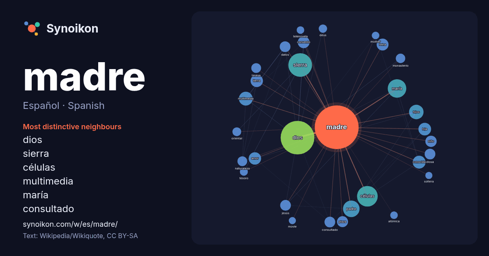

Español · Spanish · word of the day list
madre
“mother” · The words found around it in 1397 instances from Spanish Wikipedia, Wikiquote.

Most distinctive neighbours
- dios 101×
- sierra 60×
- células 49×
- multimedia 30×
- maría 21×
- consultado 19×
- convento 18×
- diosa 17×
- amor 16×
- reina 15×
- padre 14×
- teresa 14×
- hija 13×
- jesús 13×
- deus 12×
- conocida 12×
- naturaleza 11×
- monasterio 11×
- plaza 11×
- datos 10×
× = how many times more often than in general Spanish Wikipedia text.
Most frequent neighbours
- dios 178
- sierra 88
- células 67
- maría 54
- padre 43
- hijos 33
- multimedia 30
- conocida 26
- hija 25
- amor 24
- tierra 24
- iglesia 23
- convento 22
- reina 22
- mujer 21
- niño 20
- película 20
- plaza 19
- consultado 18
- datos 18
In context
- Una madre o mamá es la progenitora de uno o más infantes. Una mujer puede ser considerada madre por haber dado a luz, por haber criado a un hijo que Wikipedia snippets · Madre
- Q1101758 Multimedia: Madré / Q1101758 Worldpostalcodes.org, código postal n.º 53250. INSEE, Datos de población para el año 2012 de Madré (en francés). Wikipedia snippets · Madré
- autorrenovarse para producir más células madre. En los mamíferos, existen diversos tipos de células madre que se pueden clasificar teniendo en cuenta Wikipedia snippets · Célula madre
- dedicado a la diosa madre llamado «Himno a Gea, madre de todo». Los sumerios escribieron muchos poemas eróticos sobre su diosa madre Ninhursag. Las deidades Wikipedia snippets · Diosa madre
- primeras celebraciones del Día de la Madre se remontan a la antigua Grecia, donde se le rendían honores a Rea, la madre de los dioses Zeus, Poseidón y Hades Wikipedia snippets · Día de la Madre
- multimedia sobre Departamento de Madre de Dios. Web Oficial Departamento de Madre de Dios- Perú. Turismo en el Departamento de Madre de Dios- Perú. Tienda On Wikipedia snippets · Departamento de Madre de Dios
- multimedia sobre Río Madre de Dios. Cuenca del río Madre de Dios en el NASA Earth Observatory. Stroud Water Research Center Project in Madre de Dios, Perú. Wikipedia snippets · Río Madre de Dios
- La expresión «madre naturaleza» (también «madre tierra» o «tierra madre»), cuyas raíces son grecorromanas, es utilizada para designar el arquetipo o Wikipedia snippets · Madre naturaleza
More Spanish words
- agua
- arte
- bosque
- caballo
- camino
- campana
- canción
- ciencia
- ciudad
- clima
- comida
- corazón
- desierto
- dinero
- dios
- espejo
- estrella
- familia
- fuerza
- gato
- historia
- invierno
- isla
- jardín
- lengua
- lluvia
- mapa
- miel
- montaña
- muerte
- naturaleza
- oro
- otoño
- pan
- perro
- puente
- reloj
- sal
- salud
- silencio
- sombra
- tiempo
- tormenta
- trabajo
- tren
- té
- verano
- verdad
- vida
Precomputed on 2026-10-09 with default settings (±5 words, medium corpus). The interactive map can refresh it with live data.